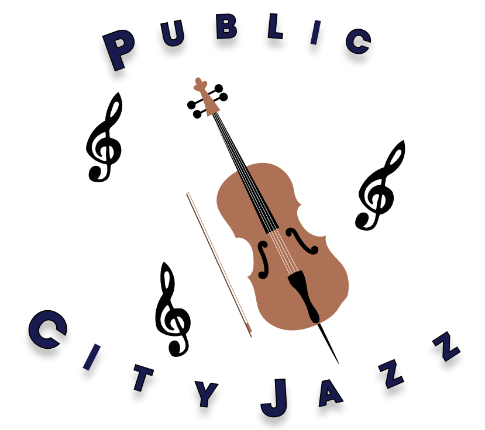
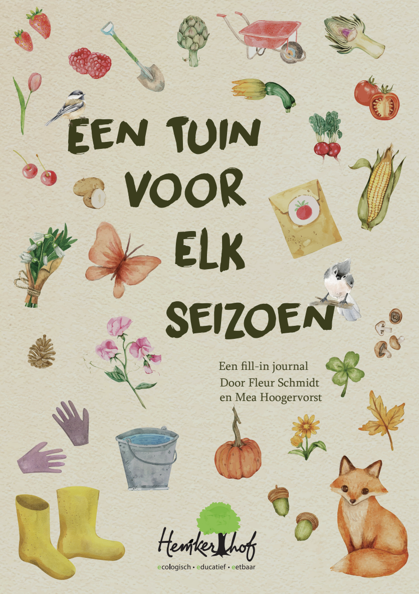
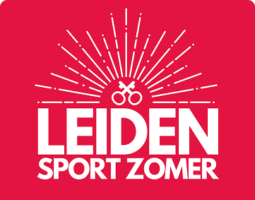
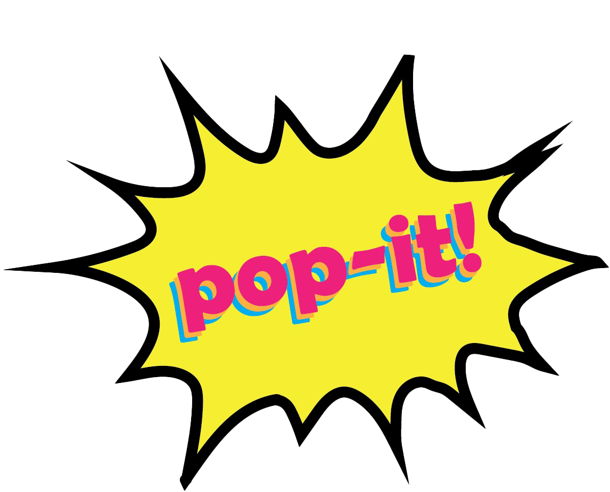
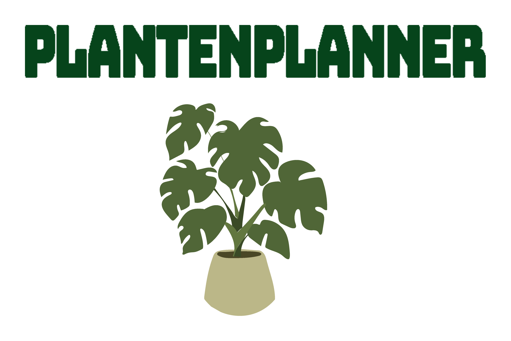

Public City Jazz
One-page experience & animatie voor gemeente Rotterdam.
UI / Motion
Seizoensboek Hemkerhof
Gedragsinterventie voor vrijwilligers via design & psychologie.
Behavior Design
Leiden Sportzomer
UX website gericht op jongeren en gedragsverandering.
UX Research / UX Design 2.png)
Amsterdam Unveiled
Podcast concept over hidden gems in Amsterdam.
Concept / Storytelling
POP IT!
Bordspel over popmuziek om sociale interactie te stimuleren.
Game Design
Planten Planner
UX dashboards gebaseerd op datatabellen voor optimale plantverzorging.
UX / Data Design